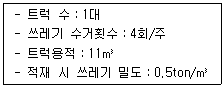
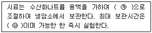
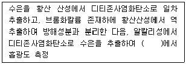
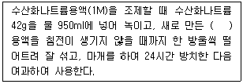
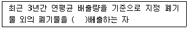
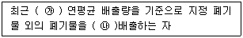

폐기물처리산업기사 (2016-10-01 기출문제)
1과목: 폐기물개론
1. 정원 쓰레기의 재활용 용도로 가장 부적절한 것은?
- 퇴비의 생산
- 바이오메스 연료로의 이용
- 매립지 최종 복토재
- 조경용 멀취(mulch)생산
(정답률: 77%)

2. 폐수처리장에서 발생되는 액상 폐기물을 관리할 때 최우선으로 고려할 사항은?
- 소독
- 탈수
- 운반
- 소각
(정답률: 82%)
3. 수거대상 인구가 1,200명인 지역에서 1주 동안의 쓰레기수거 상태를 조사하여 다음 표와 같은 결과를 얻었다. 이 지역의 1인당 1일 쓰레기 발생량(kg)은?

- 1.21
- 1.82
- 2.38
- 2.62
(정답률: 65%)
4. 다음 중 지정폐기물인 것은 어느 것인가?
- 수소이온(H+)농도 지수가 1.5인 폐산
- 수소이온(H+)농도 지수가 12.0인 폐알칼리
- 광재로서 철금속이 함유된 제철소 발생 고로슬래그
- 폐유로서 튀김 후 폐기되는 폐식용유
(정답률: 73%)
5. 목재, 고무, 플라스틱 등의 폐기물을 파쇄하는 데 적당한 형식의 파쇄장치가 아닌 것은?
- Von Roll
- Hazemag
- Lindemann
- Tollemacshe
(정답률: 60%)
6. 폐기물의 고위발열량 계산에 기초로 활용되는 것은?
- 물리적 조성
- 수분량
- 화학적 조성
- 산성분
(정답률: 77%)
7. 석면 폐기물 발생원이 아닌 것은?
- 보일러 공장
- 발전소
- 자동차 공장
- 피혁 공장
(정답률: 80%)
8. 전단파쇄기에 관한 설명으로 가장 거리가 먼 것은?
- 대체로 충격파쇄기에 비해 파쇄속도가 빠르다.
- 이물질의 혼입에 대하여 약하다.
- 파쇄물의 크기를 고르게 할 수 있다.
- 주로 목재류, 플라스틱류 및 종이류를 파쇄하는 데 이용된다.
(정답률: 82%)
9. 폐기물 발생량 저감 차원에서 중요시 되고 있는 폐기물관리의 3R 중에 포함되지 않는 것은?
- Refuse
- Reduce
- Reuse
- Recycle
(정답률: 88%)
10. 도시쓰레기의 특성으로 가장 거리가 먼 것은?
- 배출량은 생활수준의 향상, 생활양식, 수집형태 등에 따라 좌우된다.
- 쓰레기의 질은 지역, 기후 등에 따라 달라진다.
- 도시쓰레기의 처리는 성상에 크게 지배된다.
- 쓰레기 발생량은 계절에 따라 일정하다.
(정답률: 91%)
11. 물질의 전기전도성을 이용하여 도체물질과 부도체물질로 분리하는 선별법은?
- 자력선별법
- 트롬멜선별법
- 와전류선별법
- 정전기선별법
(정답률: 75%)
12. 폐기물의 소각처리에 중요한 연료특성인 발열량에 대한 설명으로 옳은 것은?
- 저위발열량은 연소에 의해 생성된 수분이 응축하였을 경우의 발열량이다.
- 고위발열량은 소각로의 설계기준이 되는 발열량으로 진발열량이라고도 한다.
- 단열열량계로 측정한 발열량은 고위발열량이다.
- 발열량은 플라스틱의 혼입률이 많으면 증가하지만 계절적 변동과 상관없이 일정하다.
(정답률: 77%)
13. pH가 8과 10인 폐알칼리액을 동일량으로 혼합하였을 경우 이 용액의 pH는?
- 8.3
- 9.0
- 9.7
- 10.0
(정답률: 63%)
14. 쓰레기의 발생량 예측에 사용되는 방법으로 가장 거리가 먼 것은?
- 경향법(Trend method)
- 물질수지법(Material balance method)
- 다중회귀모델(Multiple regression model)
- 동적모사모델(Dynamic simulation model)
(정답률: 82%)
15. 고로슬래그의 입도분석 결과 입도누적 곡선상의 10%, 60%, 입경이 각각 0.5mm, 1.0mm라면 유효입경(mm)은?
- 0.1
- 0.5
- 1.0
- 2.0
(정답률: 72%)
16. 쓰레기의 수거방법 중 수거시간이 가장 많이 소요되는 형태는?
- Alley
- Curb
- Setout－setback
- Back yard carry
(정답률: 85%)
17. 10m3의 폐기물을 압축비 8로 압축하였을 때 압축 후의 부피(m3)는?
- 0.85
- 0.95
- 1.15
- 1.25
(정답률: 85%)
18. 인구 3만인 중소도시에서 쓰레기 발생량 100m3/day(밀도는 650kg/m3)를 적재중량 4ton 트럭으로 운반하려면 1일 소요될 트럭 운반대수는? (단, 트럭의 1일 운반횟수는 1회 기준)
- 11대
- 13대
- 15대
- 17대
(정답률: 75%)
19. 밀도가 550kg/m3인 쓰레기 3m3 중 가연성 쓰레기가 30wt%일 때, 가연성 물질의 중량(kg)은?
- 약 415
- 약 435
- 약 455
- 약 495
(정답률: 80%)
20. 폐기물의 성상분석을 위해 일반적으로 분석하는 항목이 아닌 것은?
- 진비중
- 저위발열량
- 원소분석치
- 물리적 조성
(정답률: 67%)
2과목: 폐기물처리기술
21. 내륙매립공법 중 도랑형공법에 관한 설명으로 가장 거리가 먼 것은?
- 침출수 수집장치나 차수막 설치가 용이
- 사전 정비작업이 그다지 필요하지 않으나 매립용량 낭비
- 파낸 흙을 복토재로 이용 가능한 경우 경제적
- 대개 폭 5 ~ 8m 및 깊이 1 ~ 2m정도의 소규모 도랑을 판 후 매립
(정답률: 76%)
22. 다음 중 분뇨처리장에서 생물학적 처리를 함에 있어 보통 희석수는 원수의 얼마 정도인가?
- 약 20배 정도
- 약 50배 정도
- 약 100배 정도
- 약 200배 정도
(정답률: 61%)
23. 매립지 표면차수막에 관한 설명으로 틀린 것은?
- 매립지 바닥의 투수계수가 큰 경우에 사용하는 방법이다.
- 매립 전이라면 보수가 용이하지만 매립 후는 어렵다.
- 지하수 집배수시설이 불필요하다.
- 차수막 단위면적당 공사비는 저렴하지만 매립지 전체를 시공하는 경우가 많아 총 공사비는 비싸다.
(정답률: 86%)
24. 인공 복토재의 조건으로 가장 거리가 먼 것은?
- 투수계수가 높아야 한다.
- 연소가 잘 되지 않아야 한다.
- 생분해가 가능하여야 한다.
- 살포가 용이해야 한다.
(정답률: 84%)
25. 오염된 토양의 현지 생물학적 복원에 대한 설명으로 가장 거리가 먼 것은?
- 저농도의 오염물도 처리가 가능하다.
- 물리화학적 방법에 비하여 처리면적이 작다.
- 포화대수층뿐만 아니라 불포화대수층의 처리도 가능하다.
- 원래 오염물질보다 독성이 더 큰 중간생성물이 생성될 수 있다.
(정답률: 60%)
26. 소화된 슬러지를 토양에 이용하여 얻어지는 토양의 물리적 개량에 대한 설명으로 가장 거리가 먼 것은?
- 수분보유력이 증가하며 경작이 수월해진다.
- 살충제가 스며드는 양이 커져 살충효과가 지속된다.
- 유기물 함량이 증가되어 토양미생물의 성장이 활성화된다.
- 토양 속의 통기성 및 공극률이 증가된다.
(정답률: 66%)
27. 슬러지 함수율을 99%에서 92%로 낮출 경우 감소하는 슬러지 부피는? (단, 슬러지 비중1.0)
- 1/5
- 1/6
- 1/7
- 1/8
(정답률: 80%)
28. 유기물(포도당, C6H12O6) 1kg을 혐기성소화 시킬 때 이론적으로 발생되는 메탄량(kg)은?
- 약 0.09
- 약 0.27
- 약 0.73
- 약 0.93
(정답률: 83%)
29. 열분해기술에 대한 내용이 아닌 것은?
- 무산소, 저산소 상태로 가열한다.
- 폐기물 중의 가스, 기름 등을 회수할 수 있는 자원화 기술이다.
- 환원성 분위기가 유지되므로 Cr3이 Cr6으로 변할 수 있다.
- 배기가스량이 적다.
(정답률: 81%)
30. 일반적인 슬러지처리 순서로 가장 거리가 먼 것은?
- 농축-개량-탈수-최종처분
- 농축-안정화-개량-건조
- 농축-탈수-건조-최종처분
- 농축-개량-안정화-탈수
(정답률: 66%)
31. 바닥상에서 연소재의 분리가 어렵고, 투입 시 파쇄가 필요하며, 내부에 매체를 간헐적으로 보충해야 하는 단점을 가진 소각로는?
- 화격자식 소각로
- 회전원통형 소각로
- 유동층식 소각로
- 다단로상식 소각로
(정답률: 80%)
32. 고형화처리된 폐기물의 검사항목으로 가장 거리가 먼 것은?
- 투수율
- 함수율
- 압축강도
- 용출시험
(정답률: 48%)
33. 매립 후 정상상태의 단계에서 발생하는 가스 중 두 번째로 큰 부분을 차지하는 가스는? (단, 가스구성비 %, 부피 기준)
- 이산화탄소(CO2)
- 메탄(CH4)
- 황화수소(H2S)
- 수소(H2)
(정답률: 68%)
34. 합성차수막 중 PVC에 관한 설명으로 틀린 것은?
- 작업이 용이하다.
- 접합이 용이하고 가격이 저렴하다.
- 자외선, 오존, 기후에 약하다.
- 대부분의 유기화학물질에 강하다.
(정답률: 95%)
35. 분뇨처리 과정에서 포기조의 상태를 검사하기 위하여 임호프콘으로 측정한 결과, 유입수의 침전물이 5mL이고 유출수의 침전물이 0.3mL일 때 제거율(%)은 어느 것인가?
- 85
- 90
- 94
- 98
(정답률: 72%)
36. 퇴비화 과정 중에 출현하는 미생물과 분해작용에 대한 설명으로 가장 거리가 먼 것은?
- 퇴비화는 중온균과 고온균이 주된 역할을 한다.
- 고온영역에서는 세균과 방선균이 분해의 주된 역할을 한다.
- 숙성단계에서는 사상균(곰팡이)이 분해의 주된 역할을 한다.
- 초기에는 중온성 진균과 세균이 주로 분해의 주된 역할을 한다.
(정답률: 61%)
37. 다음 중 매립지 위치선정 시 적당한 곳은 어느 것인가?
- 홍수범람지역
- 습지대
- 단층지역
- 지하수위 낮은 곳
(정답률: 87%)
38. 분뇨의 총 고형물(TS)이 40,000mg/L이고, 그 중 휘발성 고형물(VS)은 60%이며, CH4의 발생량은 VS 1kg당 0.6m3라면 분뇨 1m3당의 CH4 가스발생량(m3)은?
- 16.4
- 14.4
- 12.4
- 10.4
(정답률: 65%)
39. 소각로 중 회전로에 대한 설명으로 가장 거리가 먼 것은?
- 폐기물의 소각에 방해됨이 없이 연속적으로 재를 배출할 수 있다.
- 용융상태의 물질에 의하여 방해받지 않는다.
- 습식 가스세정시스템과 함께 사용할 수 있다.
- 대기오염 제어시스템에 대한 분진부하율 및 열효율이 낮은 편이다.
(정답률: 50%)
40. 안정화방법 중 습식산화에 관한 설명으로 적절치 못한 것은?
- 액상슬러지에 열과 압력을 작용시켜 용존산소에 의하여 화학적으로 슬러지 내의 유기물을 산화시킨다.
- 반응탑, 고압펌프, 공기압축기, 열교환기 등으로 구성되어 있다.
- 산화범위에 융통성이 있고 슬러지의 질에 영향을 받지 않으나 냄새가 나고 건설비가 많이 요구된다.
- 고도의 운전기술이 필요하며 처리된 슬러지의 탈수가 잘 되지 않는 단점이 있다.
(정답률: 70%)
3과목: 폐기물 공정시험 기준(방법)
41. 폐기물공정시험기준(방법)에서 가스크로마토그래프법에 의하여 분석하는 항목이 아닌 것은?
- PCB
- 유기인
- 수은
- 휘발성 저급염소화 탄화수소류
(정답률: 85%)
42. 기체크로마토그래프법으로 PCBs 측정 시 시료의 전처리과정에서 유분의 제거를 위한 알칼리 분해제는?
- 수산화나트륨
- 수산화칼륨
- 염화나트륨
- 수산화칼슘
(정답률: 63%)
43. 5g의 NaCN을 정제수 4L에 녹이면 이 수용액 중 CN의 농도(mg/L)는? (단, Na 원자량23)
- 433
- 523
- 663
- 783
(정답률: 44%)
44. 시료의 전처리 방법 중 다량의 점토질 또는 규산염을 함유한 시료에 적용하는 것은 어느 것인가?
- 질산-과염소산 분해법
- 질산-과염소산-불화수소산 분해법
- 질산-과염소산-염화수소산 분해법
- 질산-과염소산-황화수소산 분해법
(정답률: 80%)
45. 폐기물공정시험방법에서 원자흡수분광광도법에 의한 비소의 측정 시 연소가스는?
- 아세틸렌-공기
- 수소-공기
- 아르곤-수소
- 아세틸렌-수소
(정답률: 54%)
46. 폐기물 중 시안을 측정(이온전극법)할 때 시료채취 및 관리에 관한 내용으로 ( )에 알맞은 것은?

- ㉮ pH 10 이상, ㉯ 8시간
- ㉮ pH 10 이상, ㉯ 24시간
- ㉮ pH 12 이상, ㉯ 8시간
- ㉮ pH 12 이상, ㉯ 24시간
(정답률: 90%)
47. 크롬(자외선/가시선 분광법) 측정 시 첨가한 표준물질의 농도에 대한 측정 평균값의 상대백분율로 나타내는 정확도 값은 어느 것인가?
- 90 ~110% 이내
- 85 ~ 115% 이내
- 80 ~ 120% 이내
- 75 ~ 125% 이내
(정답률: 72%)
48. Lambert-Beer의 법칙과 관계없는 것은?
- 투광도는 용액의 농도에 반비례한다.
- 투광도는 층장의 두께에 비례한다.
- 흡광도는 층장의 두께에 비례한다.
- 흡광도는 용액의 농도에 비례한다.
(정답률: 63%)
49. 폐기물 용출조작에 관한 설명으로 틀린 것은?
- 상온, 상압에서 진탕회수를 매분당 약 200회로 한다.
- 진폭 6~8cm의 진탕기를 사용한다.
- 진탕기로 6시간 연속 진탕한다.
- 여과가 어려운 경우 원심분리기를 사용하여 매 분당 3,000회전 이상으로 20분 이상 원심 분리한다.
(정답률: 80%)
50. 폐기물공정시험방법의 총칙에 명시된 용어설명으로 틀린 것은?
- “항량으로 될 때까지 건조한다.”라 함은 같은 조건에서 1시간 더 건조할 때 전후 무게 차가 g당 0.3mg이하일 때를 말한다.
- “약”이라 함은 기재된 양에 대하여 ±10% 이상의 차가 있어서는 안 된다.
- “정확히 단다.”라 함은 규정된 양의 검체를 취하여 분석용 저울로 0.1mg까지 다는 것을 말한다.
- “감압 또는 진공”이라 함은 따로 규정이 없는 한 15mmH2O 이하를 말한다.
(정답률: 80%)
51. 카드뮴의 분석방법으로 옳은 것은?
- 다이페닐카르바지드법
- 다이에틸디티오카르바민산법
- 디티존법
- 환원기화법
(정답률: 70%)
52. 5g 증발접시에 적당량의 시료를 취하여 증발접시와 무게를 달았더니 20g이었다. 1⑤ ~ 110℃ 건조기 안에서 4시간 건조시킨 후 항량으로 무게를 달았더니 10g이었다. 수분과 고형물의 함유율(%)은 어느 것인가?
- 수분：50%, 고형물：50%
- 수분：67%, 고형물：33%
- 수분：33%, 고형물：67%
- 수분：30%, 고형물：70%
(정답률: 54%)
53. 수산화나트륨(NaOH) 10g을 정제수 500mL에 용해시킨 용액의 농도(N)는? (단, 나트륨 원자량은 23)
- 0.5
- 0.4
- 0.3
- 0.2
(정답률: 67%)
54. 폐기물의 pH(유리전극법)측정 시 사용되는 표준용액이 아닌 것은?
- 수산염 표준용액
- 수산화칼슘 표준용액
- 황산염 표준용액
- 프탈산염 표준용액
(정답률: 84%)
55. 잔류염소가 함유된 시안측정 시료에서 잔류염소를 제거하기 위해 첨가하는 것은?
- 초산아연 용액(10W/V%)
- L-아스코르빈산 용액(10W/V%)
- 10% 황산제일철암모늄 용액
- 5% 피로인산나트륨 용액
(정답률: 82%)
56. 자외선/가시선 분광법으로 수은을 측정하는 방법이다. ( )의 내용으로 옳은 것은?

- 340mm
- 490mm
- 540mm
- 580mm
(정답률: 50%)
57. 성상에 따른 시료의 채취방법으로 틀린 것은?
- 고상혼합물의 경우 적당한 채취 도구를 사용하며 한 번에 일정량씩 채취한다.
- 액상혼합물의 경우 원칙적으로 최종지점의 낙하구에서 흐르는 도중에 채취한다.
- 액상혼합물이 용기에 들어 있는 경우 잘 혼합하여 균일한 상태로 하여 채취한다.
- 대형 콘크리트 고형화물로서 분쇄가 어려울 경우에는 임의의 5개소에서 채취한 후 각각 파쇄하여 50g씩 균등량을 혼합하여 채취한다.
(정답률: 85%)
58. 수소이온농도(pH)가 10이라면 [OH]의 농도(mol/L)는?
- 10-9
- 10-8
- 10-6
- 10-4
(정답률: 60%)
59. 폐기물 중 기름성분의 추출에 사용되는 물질은?
- 클로로폼
- 사염화탄소
- 벤젠
- 노말헥산
(정답률: 87%)
60. 폐기물공정시험법의 시약 및 용액의 조제방법에 대한 내용으로 ( )에 적합한 것은?

- 시안화칼륨
- 산화칼슘
- 수산화바륨
- 에틸알콜
(정답률: 56%)
4과목: 폐기물 관계 법규
61. 환경부령으로 정하는 폐기물처리시설의 설치를 마친 자는 환경부령으로 정하는 검사기관으로부터 검사를 받아야 한다. 다음 중 음식물류 폐기물처리시설의 검사기관으로 옳은 것은? (단, 그밖에 환경부장관이 정하여 고시하는 기관 제외)
- 한국산업연구원
- 보건환경연구원
- 한국농어촌공사
- 한국환경공단
(정답률: 76%)
62. '폐기물처리시설의 유지, 관리에 관한 기술관리의 대행을 할 수 있는 자'로 가장 알맞은 것은?
- 한국환경공단
- 국립환경연구원
- 시·도 보건환경연구원
- 지방환경관리청
(정답률: 91%)
63. 폐기물관리법의 적용범위에 해당하는 물질인 것은?
- 폐기되는 탄약
- 가축의 사체
- 가축분뇨
- 광재
(정답률: 72%)
64. 폐기물처리업자가 환경부령이 정하는 양과 기간을 초과하여 폐기물을 보관하였을 경우 벌칙기준은?
- 7년 이하의 징역 또는 7천만원 이하의 벌금
- 5년 이하의 징역 또는 5천만원 이하의 벌금
- 3년 이하의 징역 또는 3천만원 이하의 벌금
- 2년 이하의 징역 또는 2천만원 이하의 벌금
(정답률: 50%)
65. 국가 폐기물관리 종합계획에 포함되어야 하는 사항으로 틀린 것은?
- 재원 조달 계획
- 부문별 폐기물관리 정책
- 폐기물관리계획의 검토 및 평가
- 종합계획의 기조
(정답률: 63%)
66. 폐기물 수출신고를 하려는 자가 폐기물의 발생지를 관할하는 지방환경관서의 장에게 제출하는 신고서에 첨부하여야 하는 서류가 아닌 것은?
- 수출폐기물의 운반계획서
- 수출가격이 본선 인도가격(F.O.B)으로 명시된 수출계약서나 주문서 사본
- 수출폐기물 처리계획 확인서
- 수출폐기물의 운반계약서 사본(위탁운반하는 경우에만 첨부한다.)
(정답률: 62%)
67. 주변지역 영향조사 대상 폐기물처리시설 기준으로 옳은 것은 어느 것인가? (단, 대통령령으로 정하며 폐기물처리업자 설치, 운영)
- 매립면적 1만 제곱미터 이상의 사업장 지정폐기물 매립시설
- 매립면적 2만 제곱미터 이상의 사업장 지정폐기물 매립시설
- 매립면적 3만 제곱미터 이상의 사업장 지정폐기물 매립시설
- 매립면적 5만 제곱미터 이상의 사업장 지정폐기물 매립시설
(정답률: 85%)
68. 중간처분시설 중 기계적 처분시설에 해당하는 것은?
- 고형화·고화·안정화 시설
- 반응시설
- 소멸화시설
- 용융시설
(정답률: 81%)
69. 지정폐기물의 수집·운반·보관 기준에 관한 설명으로 옳은 것은?
- 폐농약·폐촉매는 보관개시일로부터 30일을 초과하여 보관하여서는 아니 된다.
- 수집·운반 차량은 녹색도색을 하여야 한다.
- 지정폐기물과 지정폐기물 외의 폐기물을 구분없이 보관하여야 한다.
- 폐유기용제는 휘발되지 아니하도록 밀폐된 용기에 보관하여야 한다.
(정답률: 62%)
70. 폐기물발생억제지침 준수의무 대상 배출자의 규모기준으로 ( )에 알맞은 것은?

- 1톤 이상
- 10톤 이상
- 100톤 이상
- 1,000톤 이상
(정답률: 64%)
71. 폐기물처리시설 중 멸균분쇄시설의 정기검사항목이 아닌 것은?
- 자동투입장치와 투입량 자동계측장치의 작동상태
- 자동기록장치의 작동상태
- 폭발사고와 화재 등에 대비한 구조의 적절유지
- 멸균조건의 적정유지 여부(멸균검사 포함)
(정답률: 46%)
72. 대통령령으로 정하는 폐기물처리시설을 설치·운영하는 자 중에 기술관리인을 임명하지 아니하고 기술관리 대행계약을 체결하지 아니한 자에 대한 과태료 처분기준은?
- 1천만원 이하
- 5백만원 이하
- 3백만원 이하
- 2백만원 이하
(정답률: 81%)
73. 지정폐기물에 함유된 유해물질이 아닌 것은 어느 것인가?
- 기름성분
- 납
- 구리
- 니켈
(정답률: 58%)
74. 시·도지사나 지방환경관서의 장이 폐기물처리시설의 개선명령을 명할 때 개선 등에 필요한 조치의 내용, 시설의 종류 등을 고려하여 정하여야 하는 기간은? (단, 연장기간은 고려하지 않음)
- 3개월
- 6개월
- 1년
- 1년 6개월
(정답률: 59%)
75. 폐기물처리업의 허가를 받을 수 없는 자의 기준으로 틀린 것은?
- 미성년자
- 파산선고를 받은 자로서 파산선고를 받은 날부터 2년이 지나지 아니한 자
- 폐기물관리법을 위반하여 징역 이상의 형을 선고받고 그 형의 집행이 끝나거나 집행을 받지 아니하기로 확정된 후 2년이 지나지 아니한 자
- 폐기물처리업의 허가가 취소된 자로서 그 허가가 취소된 날부터 2년이 지나지 아니한 자
(정답률: 70%)
76. 폐기물처리담당자 등이 이수하여야 하는 교육과정으로 틀린 것은?
- 사업장폐기물배출자 과정
- 폐기물처리업 기술요원 과정
- 폐기물재활용시설 기술요원 과정
- 폐기물처분시설 기술담당자 과정
(정답률: 66%)
77. 지정폐기물(의료폐기물은 제외) 보관창고에 설치해야 하는 지정폐기물의 종류, 보관가능용량, 취급 시 주의사항 및 관리책임자 등을 기재한 표지판 표지의 규격기준으로 옳은 것은? (단, 드럼 등 소형용기에 붙이는 경우 제외)
- 가로 60센티미터 이상×세로 40센티미터 이상
- 가로 80센티미터 이상×세로 60센티미터 이상
- 가로 100센티미터 이상×세로 80센티미터 이상
- 가로 120센티미터 이상×세로 100센티미터 이상
(정답률: 79%)
78. 폐기물발생억제지침 준수의무 대상 배출자의 규모기준으로 ( )에 알맞은 것은?

- ㉮ 2년간, ㉯ 200톤 이상
- ㉮ 2년간, ㉯ 1천톤 이상
- ㉮ 3년간, ㉯ 200톤 이상
- ㉮ 3년간, ㉯ 1천톤 이상
(정답률: 78%)
79. 의료폐기물 중 일반 의료폐기물에 해당되는 것은?
- 시험·검사 등에 사용된 배양액
- 파손된 유리재질의 시험기구
- 혈액·체액·분비물·배설물이 함유되어 있는 탈지면
- 한방침
(정답률: 72%)
80. 폐기물처리시설의 설치기준 중 고온용융시설의 개별기준으로 틀린 것은?
- 시설에서 배출되는 잔재물의 강열감량은 5% 이하가 될 수 있는 성능을 갖추어야 한다.
- 연소가스의 체류시간은 1초 이상이어야 하고, 충분하게 혼합될 수 있는 구조이어야 한다.
- 연소가스의 체류시간은 섭씨 1,200도에서의 부피로 환산한 연소가스의 체적으로 계산한다.
- 시설의 출구온도는 섭씨 1,200도 이상이 되어야 한다.
(정답률: 59%)